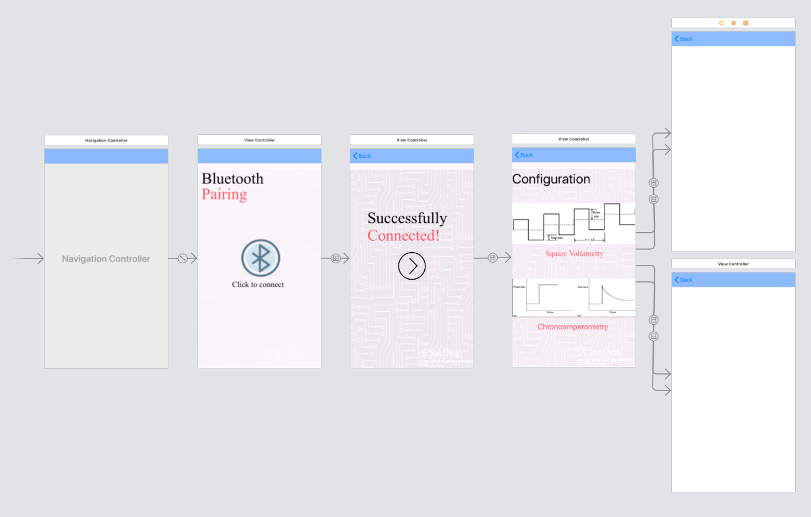
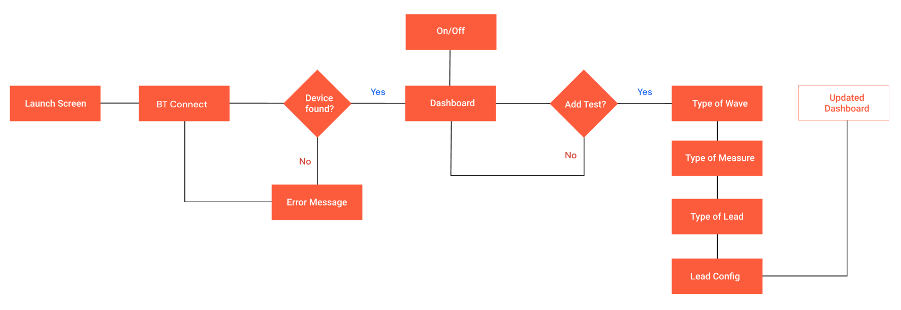
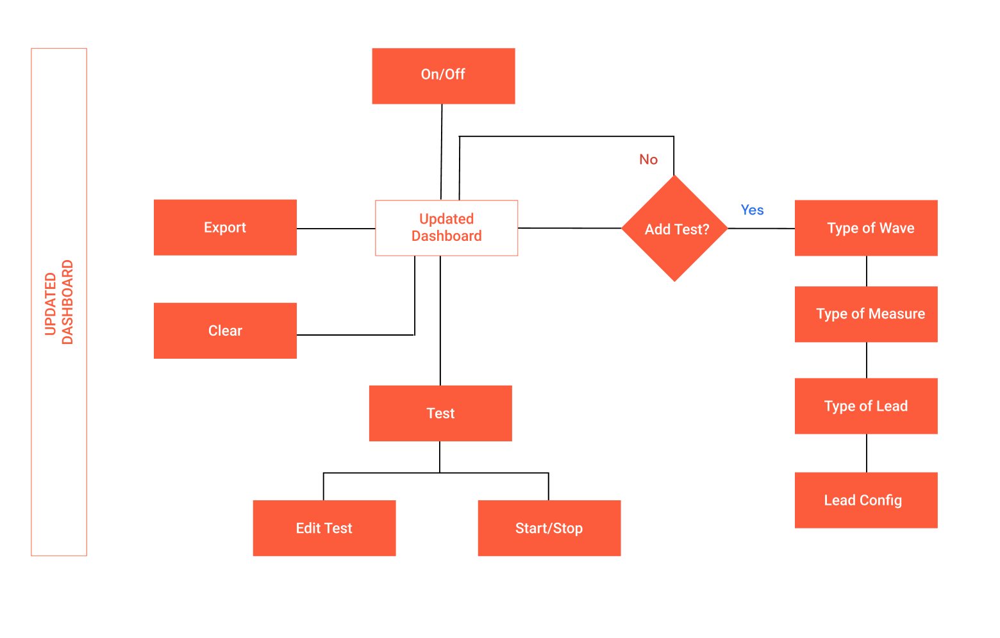

Led design of wireframes and mobile iOS app development for a new biosensor that measure blood glucose and ketone levels and is paired through Bluetooth.
UI/UX Designer
iOS UI Developer
3 Months
What is CGM?
A continuous glucose monitor is a device used for monitoring blood glucose on a continual basis by people with either type I or type II diabetes. A continuous glucose monitor takes a reading on set intervals with a small electrode placed under the skin and held in place by an adhesive.Currently companies like Dexcom, Medtronic and Abbott are the leading CGM manufactures.
At the center of wearable sensors we are on the verge of a new CGM biosensor that would have shorter intervals than any other biosensor in the market today and it will not only track glucose but would also be able to measure Ketone. Under the guidance of Prof. Joseph Wang and Prof. Patrick Mercier my team and I have been able to create a working prototype and are conducting tests.
My role consisted of two parts a UI/UX Designer and iOS UI Developer.
As a designer I led the design of wireframes from sketching to high fidelity prototypes for the iOS mobile app that would be connected to the bluetooth sensor. I also created the brand for the device which consisted of the style guide, logo and other digital assets. All designing was done using Adobe XD, Photoshop and occasionally Illustrator.
My experience working with Dexcom at the Design Lab came in very handy for this project as the lab too was making a continous glucose monitoring sensor.
Compared to my experience with Dexcom the key differences I had to keep in mind was;
In order to understand the device and app we were making I met up with electrical engineers , bioengineers, developers and the professors involved in the project.
The current work flow did not consist of a lot of collaboration instead it was an iterative process where the developer would squeeze features in as requested from the engineers and professor.This was not scalable and would lead to a lot of errors therefore I took upon myself to implement design thinking into this project.
I started off by finding what has been accomplished in the project thus far and what needs to be done.
Below was all the developer had completed. He had not got too far therefore it was not to late to implement design thinking. I was also given a funtional requirements document of what the sensor could do which was very useful in creating user flows.

In order to better understand what the engineers needed in the app, I encouraged meetings where all stakeholders were present.
During our first meeting, I asked the engineers what they would want in the app and we designed the flow of the app together on a white board.
The most important features were:

